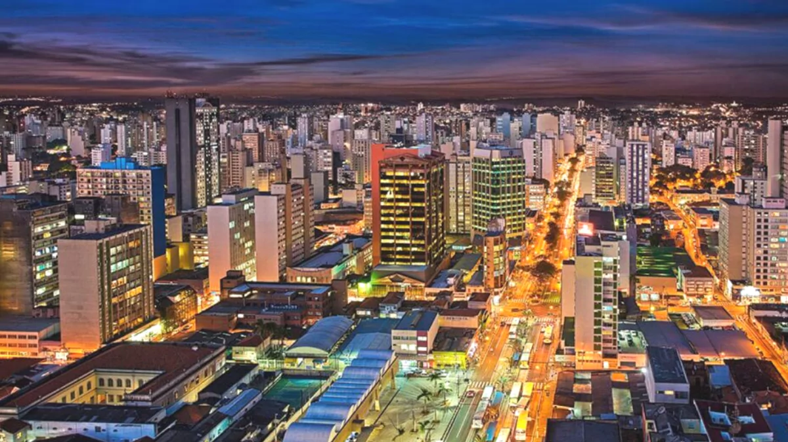

Campinas

Campinas é um dos principais polos econômicos e tecnológicos do Brasil. Localizada no interior de São Paulo, a cidade é conhecida por seu papel no desenvolvimento científico, pela presença de grandes universidades e pela importância no setor de tecnologia e inovação. Sua localização estratégica, próxima a São Paulo e ao Aeroporto Internacional de Viracopos, torna-a um ponto de conexão fundamental para negócios nacionais e internacionais.
A cidade tem forte vocação para pesquisa e educação, com destaque para a Unicamp, considerada uma das melhores universidades da América Latina. Além disso, abriga parques tecnológicos e centros de pesquisa que atraem empresas de alta tecnologia e profissionais qualificados.
Com mais de 1,2 milhão de habitantes, Campinas combina modernidade, lazer, cultura e qualidade de vida, oferecendo aos moradores e visitantes um ambiente dinâmico e diversificado.
Pontos Turísticos
- Parque Portugal (Lagoa do Taquaral): Principal área de lazer da cidade, com lago, pedalinho, ciclovia e planetário.
- Torre do Castelo: Símbolo arquitetônico que oferece vista panorâmica da cidade.
- Museu da Cidade: Espaço cultural que preserva a história local.
Gastronomia
- Comida Italiana: Forte influência da imigração, com cantinas tradicionais.
- Pão com Mortadela: Clássico das padarias campineiras.
- Sorvetes Artesanais: Muito populares na região central e nos bairros.
Economia
- Tecnologia e Inovação: Abriga centros de pesquisa e parques tecnológicos.
- Indústria: Forte presença nos setores farmacêutico, automotivo e alimentício.
- Serviços: Grande rede de hospitais e centros comerciais.
Curiosidades
- Unicamp: Uma das universidades mais prestigiadas da América Latina.
- Aeroporto de Viracopos: Um dos mais movimentados do Brasil em carga aérea.
- Música Caipira: Campinas é referência histórica no gênero.